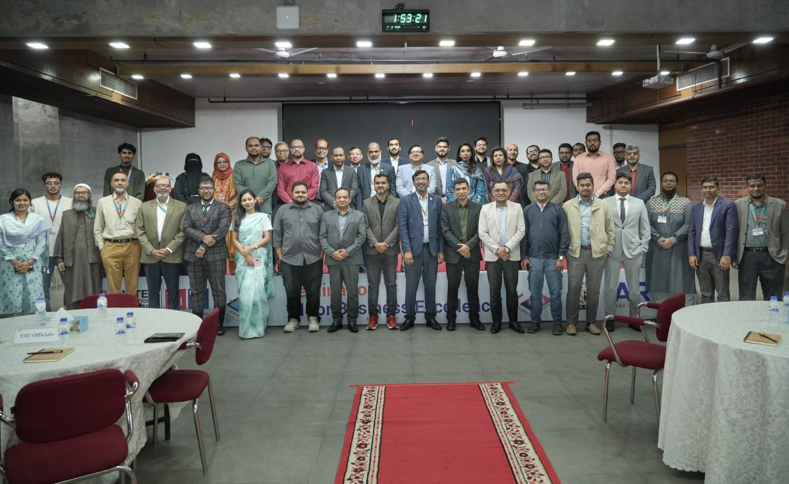

|
|

Industry–Academia Collaboration Seminar: AI for
Business Excellence
UIU hosted the seminar “AI for Business Excellence” on 7 February at the UIU campus, bringing
academia and industry perspectives to one platform. The speakers discussed emerging AI trends,
policy considerations, human resource management, and the skills required to leverage AI
effectively for sustainable business growth.
[Read More] →
|

|
BBA in AIS Earns IIA Academic Alliance Recognition
UIU’s BBA in Accounting and Information Systems (AIS) received Academic Alliance
accreditation from the Institute of Internal Auditors (IIA), USA—with UIU noted as
the second university in Bangladesh to receive it. The recognition reflects
alignment with international internal-audit education standards and supports
stronger academia–industry linkage for career readiness.
[Read More] →
|
|

|
IQAC Faculty Induction Training: Strengthening Teaching Excellence
IQAC conducted a faculty induction and capacity-building program for newly appointed
faculty members, focusing on academic quality and teaching practice. The session
supports consistent instructional standards and helps faculty align with UIU’s
academic framework and classroom expectations.
[Read More]
→
|
|

|
Alumni Talks : Mr. Kazi Oasek Bin Khorshed
Mr. Kazi Oasek Bin Khorshed - Region Head, Marico Bangladesh - shared his valuable
interaction with current students of UIU with whom he shared his education at UIU
and success thereafter in several brands.
► View
Now
|
|

|
Career Pathways & Industry Perspective
Mr. AB Taimur Polok - Area Manager, Unilever Bangladesh - reminisced his time as a
UIU student and inspiring others to achieve success in MNCs as well as in big
conglomerates.
► View
Now
|
|

|
Documentary Screening: “Chhayabritto (The Silhouette)”
UIU’s Directorate of Career Counseling & Student Affairs (DCCSA), through the Theatre
& Film Club, presents the documentary “Chhayabritto (The Silhouette)” in observance
of International Mother Language Day. The film pays tribute to Bangladesh’s rich
linguistic and cultural diversity and highlights the importance of respecting every
language.
► View
Now
|
|

|
Convocation Message: Well-wishes from United Healthcare
United Healthcare shared warm wishes for UIU graduates, celebrating their milestone
and encouraging a healthy, confident start to the next chapter. The message
recognizes graduates’ achievements and extends support as they move forward into
professional life.
► View
Now
|
|

|
Achievement Spotlight: UIU Faculty Tops HEAT Workshop
Mr. Imtiaz Zahan Chowdhury, Lecturer at the School of Business and Economics (SoBE),
has secured the First Merit Position in the first batch of the Professional
Development Training (PDT) conducted by the University Teachers’ Training Academy
(UTTA) under the Higher Education Acceleration and Transformation (HEAT) Project.
[Read More]
→
|
|

|
UIU × AI Forum Bangladesh Podcast: Education & Careers in the Age of AI
UIU and AI Forum Bangladesh present “এআই নিয়ে জেন জি, কেমন সরকার চাইছি?” (in
association with IRIIC, media partner: Bonik Barta). This episode focuses on
Education & Career in the AI era.
► View
Now
|
|

|
Career Update: UIU Graduates Recruited at Bitopia Group
UIU graduates have been recruited at Bitopia Group, reflecting strong employability
and industry confidence in UIU talent. The update highlights how UIU’s academic
preparation and skills orientation translate into real hiring outcomes.
[Read More]
→
|
|
Wish to Collaborate?
Connect with us for partnerships at
mutiatur@admin.uiu.ac.bd
© 2026 United International University. All rights reserved.
|